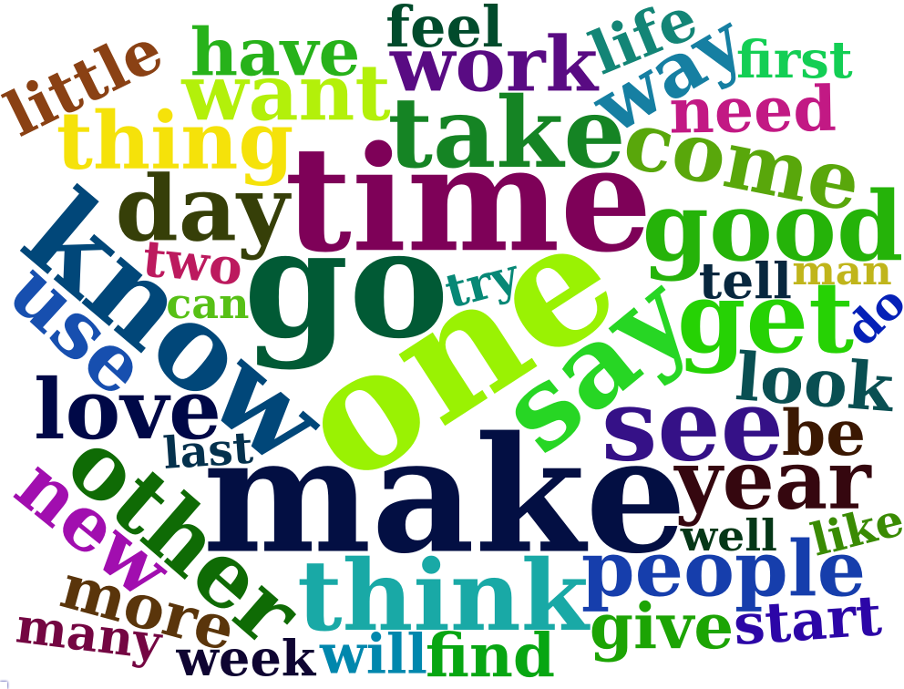
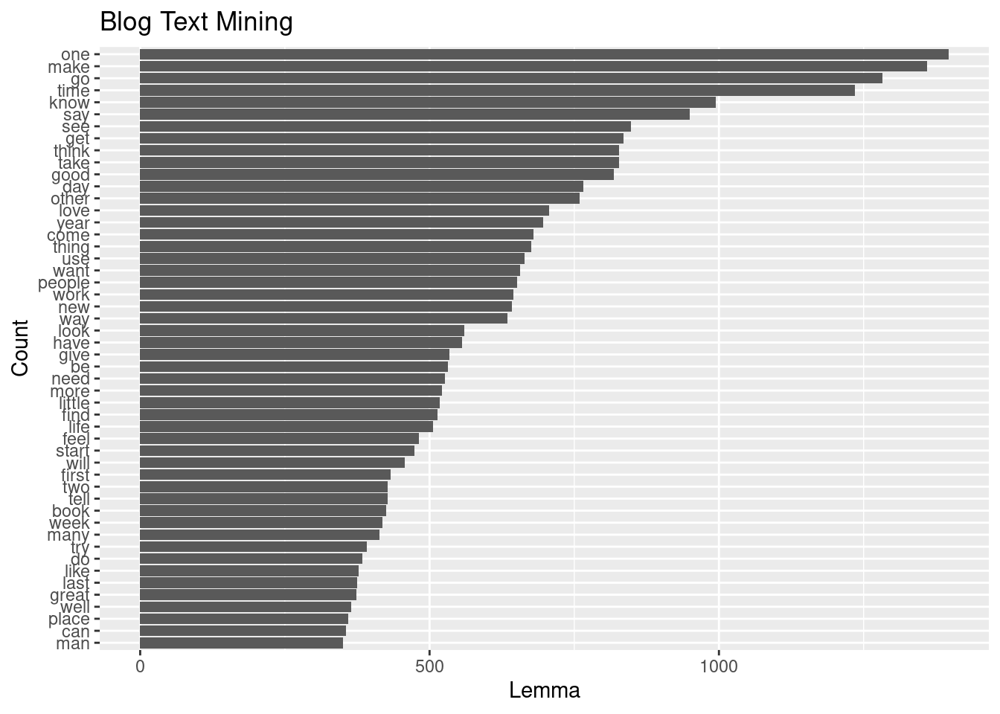
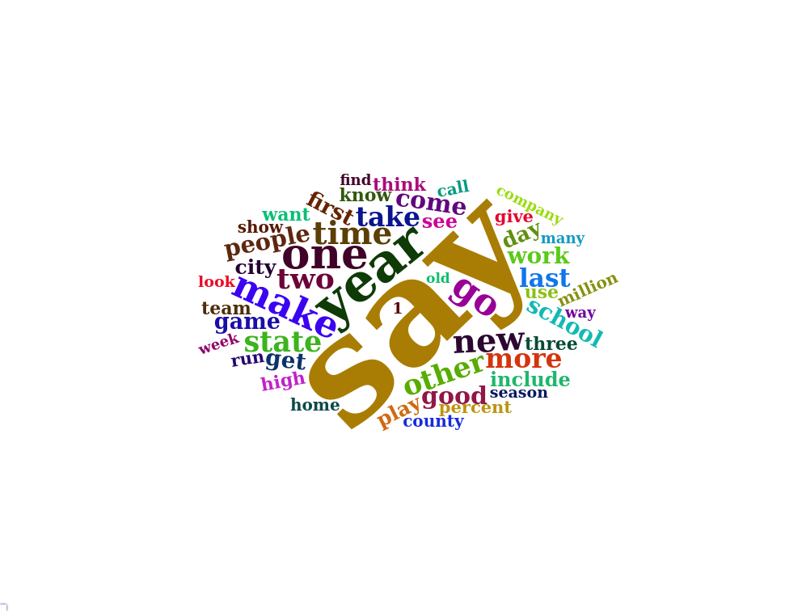
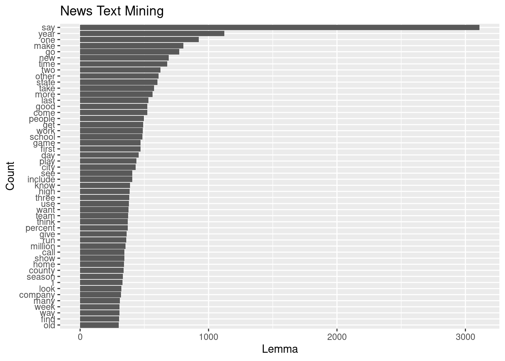
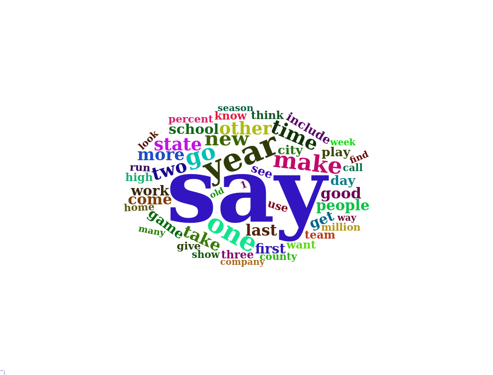
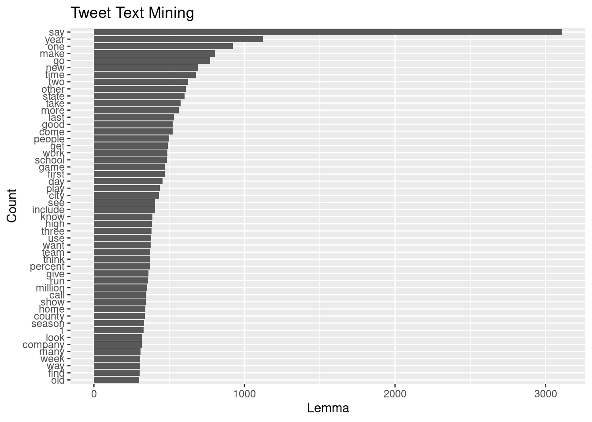

11.4 Tokenization
Tokens are the building blocks of Natural Language Processing. Tokenization is a way of separating text into smaller units using a delimeter such as space or hyphen. Tokens can be words, characters, or subwords. (Pai 2020).
An example of a word token from a sentence: “You are the best”. We are assuming space is a delimiter. The tokenization of the sentence results in 4 tokens You_are_the_best.
The example provided is pretty straight forward. There are other opportunities as well, words or characters such as:
- aren’t
- lol
- Oh là là !
- 😍
There are plenty of packages in R that can handle these occasions. Some of the pacakges are tm, quanteda, openNLP, spacyr, rweka, and tidytext. We will use spacyr for these part of the capstone but in the long run I want to learn more about the python environment in NLP. Combining these two languages are beneficial and RStudio provides the necessary IDE to use both languages simultaneously. Let’s go through the basics of our data using spacyr.
Spacyr provides a convenient R wrapper around the Python spaCy package. It offers easy access to the following functionality of spaCy:
- parsing texts into tokens or sentences;
- lemmatizing tokens;
- parsing dependencies (to identify the grammatical structure of the sentence); and
- identifying, extracting, or consolidating token sequences that form named entities or noun phrases.
- It also allows a user to request additional token-level attributes directly from spaCy (Kenneth Benoit 2020).
11.4.1 spacyr
library(spacyr)
spacy_initialize(model = "en_core_web_sm")
# reading lines of English blogs, news and tweets
# with a sample size of 10000 starting from the top line.
blogs_samp <- readLines(finaldir[[4]], n=10000)
news_samp <- readLines(finaldir[[5]], n=10000)
tweets_samp <- readLines(finaldir[[6]], n=10000)
head(blogs_samp)## [1] "In the years thereafter, most of the Oil fields and platforms were named after pagan “gods”."
## [2] "We love you Mr. Brown."
## [3] "Chad has been awesome with the kids and holding down the fort while I work later than usual! The kids have been busy together playing Skylander on the XBox together, after Kyan cashed in his $$$ from his piggy bank. He wanted that game so bad and used his gift card from his birthday he has been saving and the money to get it (he never taps into that thing either, that is how we know he wanted it so bad). We made him count all of his money to make sure that he had enough! It was very cute to watch his reaction when he realized he did! He also does a very good job of letting Lola feel like she is playing too, by letting her switch out the characters! She loves it almost as much as him."
## [4] "so anyways, i am going to share some home decor inspiration that i have been storing in my folder on the puter. i have all these amazing images stored away ready to come to life when we get our home."
## [5] "With graduation season right around the corner, Nancy has whipped up a fun set to help you out with not only your graduation cards and gifts, but any occasion that brings on a change in one's life. I stamped the images in Memento Tuxedo Black and cut them out with circle Nestabilities. I embossed the kraft and red cardstock with TE's new Stars Impressions Plate, which is double sided and gives you 2 fantastic patterns. You can see how to use the Impressions Plates in this tutorial Taylor created. Just one pass through your die cut machine using the Embossing Pad Kit is all you need to do - super easy!"
## [6] "If you have an alternative argument, let's hear it! :)"## [1] 10000The collections of blogs seem to have no specific topic. The information are simply a collection of random blogs. The same applies to news and tweets. Let’s dig deeper and see what we have inside our data using spacy_parse function. Every line I’ve reviewed are not connected to the next line.
parse_blogs <- spacy_parse(blogs_samp)
head(parse_blogs) %>% kable(caption = 'Spacyr Tokenization') %>% kableExtra::kable_styling()| doc_id | sentence_id | token_id | token | lemma | pos | entity |
|---|---|---|---|---|---|---|
| text1 | 1 | 1 | In | in | ADP | |
| text1 | 1 | 2 | the | the | DET | DATE_B |
| text1 | 1 | 3 | years | year | NOUN | DATE_I |
| text1 | 1 | 4 | thereafter | thereafter | ADV | |
| text1 | 1 | 5 | , | , | PUNCT | |
| text1 | 1 | 6 | most | most | ADJ |
Table 11.2 “doc_id = text1” is basically line 1 in our main blog file. The “sentence_id” is beginning sentence ending with a punctuation either “., ? or !” in line 1. If it has more than 1 sentence then the sentence_id changes to 2, 3, 4 etc. depending on how many sentences are in the line. The token_id is the position of word or punctuation in sentence_id. Token is the actual word or punctuantion. The lemma is the root word. The “pos” is the description or use of the word such as noun, adp = adposition such as “in, of, after, and before”. The “entity” are person, date, numbers etc.
11.4.2 We can create a data.frame output and tokenize our samples below.
parse_blogs_tok <-
spacy_tokenize(blogs_samp,
remove_punct=TRUE,
output="data.frame")
parse_blogs_tok %>%
tail() %>%
kable(caption = "Tail") %>%
kableExtra::kable_styling()| doc_id | token | |
|---|---|---|
| 420373 | text10000 | USING |
| 420374 | text10000 | THEM |
| 420375 | text10000 | TO |
| 420376 | text10000 | DO |
| 420377 | text10000 | HIS |
| 420378 | text10000 | WILL |
| doc_id | token | |
|---|---|---|
| Length:420378 | Length:420378 | |
| Class :character | Class :character | |
| Mode :character | Mode :character |
11.4.3 We can extract language properties:
parse_blogs_entity <- spacy_parse(blogs_samp,
lemma = FALSE,
entity = TRUE,
nounphrase = TRUE)
entity_extract(parse_blogs_entity) %>%
arrange(doc_id) %>%
tail(10) %>%
kable(caption = "Entity Extraction") %>%
kableExtra::kable_styling()| doc_id | sentence_id | entity | entity_type | |
|---|---|---|---|---|
| 13666 | text9977 | 1 | the_Young_Inventor_’s_Challenge | ORG |
| 13667 | text9979 | 1 | Savior | ORG |
| 13668 | text998 | 1 | the_North_Pacific | LOC |
| 13669 | text9981 | 1 | Christians | NORP |
| 13670 | text9986 | 1 | Indonesia | GPE |
| 13671 | text9988 | 1 | the_Coffin_Hop | FAC |
| 13672 | text999 | 2 | Pat | PERSON |
| 13673 | text9991 | 1 | M&S | ORG |
| 13674 | text9994 | 1 | Terry_Richardson | PERSON |
| 13675 | text9999 | 1 | Joe_Kingsley | PERSON |
11.4.4 We can extract dates, events and cardinal or ordinal quantities:
entity_extract(parse_blogs_entity,
type = "all") %>%
tail() %>%
kable(caption = "All Entity Extraction") %>%
kableExtra::kable_styling()| doc_id | sentence_id | entity | entity_type | |
|---|---|---|---|---|
| 22848 | text9991 | 1 | M&S | ORG |
| 22849 | text9992 | 1 | 6:5 | CARDINAL |
| 22850 | text9993 | 2 | last_year | DATE |
| 22851 | text9994 | 1 | Terry_Richardson | PERSON |
| 22852 | text9995 | 2 | Sunday | DATE |
| 22853 | text9999 | 1 | Joe_Kingsley | PERSON |
11.4.5 Consolidate functions to compound multi-word entities into single “token”:
entity_consolidate(parse_blogs_entity) %>%
tail(10) %>%
kable(caption = "Multi-Word Entities") %>%
kableExtra::kable_styling()| doc_id | sentence_id | token_id | token | pos | entity_type | |
|---|---|---|---|---|---|---|
| 464512 | text9998 | 4 | 7 | tabs | NOUN | |
| 464513 | text9998 | 4 | 8 | on | ADP | |
| 464514 | text9998 | 4 | 9 | regular | ADJ | |
| 464515 | text9998 | 4 | 10 | commenters | NOUN | |
| 464516 | text9998 | 4 | 11 | on | ADP | |
| 464517 | text9998 | 4 | 12 | PROPN | ||
| 464518 | text9998 | 4 | 13 | . | PUNCT | |
| 464519 | text9999 | 1 | 1 | Writer | NOUN | |
| 464520 | text9999 | 1 | 2 | : | PUNCT | |
| 464521 | text9999 | 1 | 3 | Joe_Kingsley | ENTITY | PERSON |
11.4.6 Consolidate noun phrase into single “token”:
nounphrase_consolidate(parse_blogs_entity) %>%
tail(10) %>%
kable(caption = "Noun Phrase") %>%
kableExtra::kable_styling()| doc_id | sentence_id | token_id | token | pos | |
|---|---|---|---|---|---|
| 385109 | text9998 | 4 | 6 | keep | VERB |
| 385110 | text9998 | 4 | 7 | tabs | nounphrase |
| 385111 | text9998 | 4 | 8 | on | ADP |
| 385112 | text9998 | 4 | 9 | regular_commenters | nounphrase |
| 385113 | text9998 | 4 | 10 | on | ADP |
| 385114 | text9998 | 4 | 11 | nounphrase | |
| 385115 | text9998 | 4 | 12 | . | PUNCT |
| 385116 | text9999 | 1 | 1 | Writer | nounphrase |
| 385117 | text9999 | 1 | 2 | : | PUNCT |
| 385118 | text9999 | 1 | 3 | JoeKingsley | nounphrase |
11.4.7 Analyzing Blog Data Set
x <- blogs_samp
x <- spacy_parse(x)
x$token <- tolower(x$token)
x$lemma <- tolower(x$lemma)
x <- x %>% filter(pos != "DET" & pos != "PUNCT" &
pos != "ADP" & pos != "AUX" &
pos != "PRON" & pos != "CCONJ" &
pos != "SCONJ" & pos != "SYM" &
pos != "PART" & pos != "ADV" &
lemma != "’s" & lemma != "’" &
lemma != "-" & lemma != "_" &
lemma != "-" & lemma != "°")
x <- x %>% group_by(lemma)
x <- x %>% summarise(count =n())
x <- x %>% arrange(-count)wcloud <- wordcloud2::wordcloud2(x[1:50,])
saveWidget(wcloud, "tmp.html", selfcontained = F)
webshot("tmp.html", "wc.png", delay = 5)
ggplotly(x[1:50,] %>% ggplot(aes(x=lemma, y=count)) +
geom_point() +
labs(x= "Lemma", y="Count", title = "Blog Text Mining") +
theme(axis.text.x=element_text(angle=90,hjust=.1)) )x[1:50,] %>% ggplot(aes(y=reorder(lemma,count), x=count)) +
geom_col() +
labs(x= "Lemma", y="Count", title = "Blog Text Mining")
11.4.8 News Data Set
x <- news_samp
x <- spacy_parse(x)
x$token <- tolower(x$token)
x$lemma <- tolower(x$lemma)
x <- x %>% filter(pos != "DET" & pos != "PUNCT" &
pos != "ADP" & pos != "AUX" &
pos != "PRON" & pos != "CCONJ" &
pos != "SCONJ" & pos != "SYM" &
pos != "PART" & pos != "ADV" &
lemma != "’s" & lemma != "’" &
lemma != "-" & lemma != "_" &
lemma != "-" & lemma != "°")
head(x)## doc_id sentence_id token_id token lemma pos entity
## 1 text2 1 2 st. st. PROPN GPE_B
## 2 text2 1 3 louis louis PROPN GPE_I
## 3 text2 1 4 plant plant NOUN
## 4 text2 1 7 close close VERB
## 5 text2 2 3 die die VERB
## 6 text2 2 5 old old ADJwcloud<-wordcloud2::wordcloud2(x[1:50,])
saveWidget(wcloud, "tmp.html", selfcontained = F)
webshot("tmp.html", "wc1.png", delay = 5)
ggplotly(x[1:50,] %>% ggplot(aes(x=lemma, y=count)) +
geom_point() +
labs(x= "Lemma", y="Count", title = "News Text Mining") +
theme(axis.text.x=element_text(angle=90,hjust=.1)) )x[1:50,] %>% ggplot(aes(y=reorder(lemma,count), x=count)) +
geom_col() +labs(x= "Lemma", y="Count", title = "News Text Mining")
11.4.9 Tweet Data Set
x <- news_samp
x <- spacy_parse(x)
x$token <- tolower(x$token)
x$lemma <- tolower(x$lemma)
x <- x %>% filter(pos != "DET" & pos != "PUNCT" &
pos != "ADP" & pos != "AUX" &
pos != "PRON" & pos != "CCONJ" &
pos != "SCONJ" & pos != "SYM" &
pos != "PART" & pos != "ADV" &
lemma != "’s" & lemma != "’" &
lemma != "-" & lemma != "_" &
lemma != "-" & lemma != "°")
x <- x %>% group_by(lemma)
x <- x %>% summarise(count =n())
x <- x %>% arrange(-count)wcloud <- wordcloud2::wordcloud2(x[1:50,])
saveWidget(wcloud, "tmp.html", selfcontained = F)
webshot("tmp.html", "wc2.png", delay = 5)
ggplotly(x[1:50,] %>% ggplot(aes(x=lemma, y=count)) +
geom_point() +
labs(x= "Lemma", y="Count", title = "Tweet Text Mining") +
theme(axis.text.x=element_text(angle=90,hjust=.1)) )x[1:50,] %>% ggplot(aes(y=reorder(lemma,count), x=count)) +
geom_col() +labs(x= "Lemma", y="Count", title = "Tweet Text Mining")
References
Kenneth Benoit, Akitaka Matsuo. 2020. “A Guide to Using Spacyr.” https://spacyr.quanteda.io/articles/using_spacyr.html.
Pai, Aravind. 2020. “What Is Tokenization in Nlp? Here’s All You Need to Know.” https://www.analyticsvidhya.com/blog/2020/05/what-is-tokenization-nlp/#:~:text=Tokenization%20is%20a%20common%20task%20in%20Natural%20Language%20Processing%20(NLP).&text=Tokens%20are%20the%20building%20blocks,words%2C%20characters%2C%20or%20subwords.